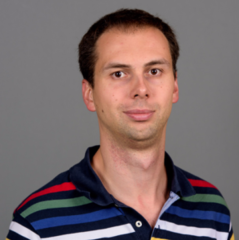
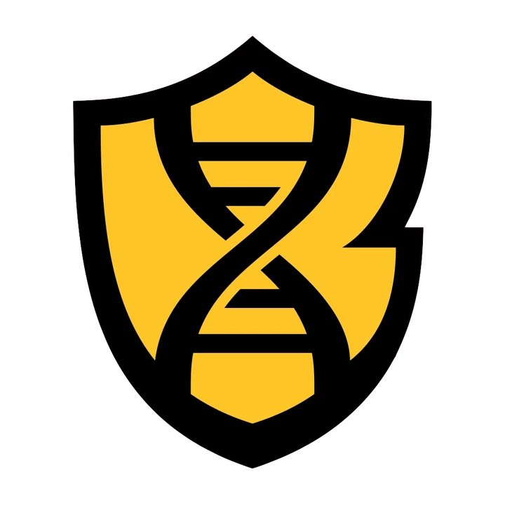

Meet the Team
Mentors
Prof. Rizal F. Hariadi
Prathamesh Chopade, PhD

Prof. Petr Šulc
Undergraduates
Rayhan Rizqi

Sri Ujjwal Reddy
Kaustubh Negi
Carlos Meza
Kavi Ullal
Acknowledgements
We would like to thank postdocs Hao Liu and Subhajit Roy at Arizona State University for teaching us oxDNA for use in our project.
We would also like to thank Ralf Jungmann and his PhD student Philipp Steen for graciously helping us out with dual-color DNA-PAINT.
We would also like to thank Ranjan Sasmal and Bima Wisna at the Hariadi Lab at Arizona State University for their help throughout our project.